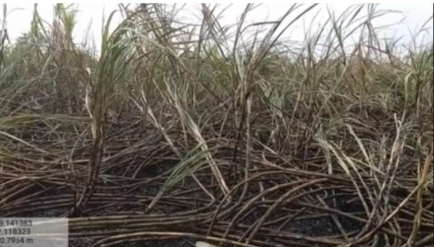
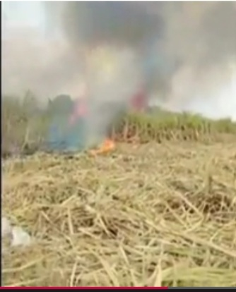
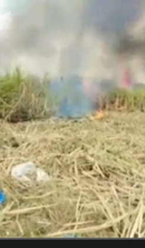

<!DOCTYPE html>
<html>

<head>
  <meta charset="UTF-8">
  <meta name="viewport" content="width=device-width, initial-scale=1">
  <title>पूर्णा; तालुक्यातील सोन्ना येथे विद्युत तार तुटून लागलेल्या आगीत दोन एकर ऊस जळून खाक, अडीच लाखाचे नुकसान.<title/>
</head>

<body>
  <h1>पूर्णा; तालुक्यातील सोन्ना येथे विद्युत तार तुटून लागलेल्या आगीत दोन एकर ऊस जळून खाक, अडीच लाखाचे नुकसान.<h1/>
    <div class="single_left_coloum floatleft"> 
      <div class="single_left_coloum floatleft"> 
        <div class="single_left_coloum floatleft"> 
        </div>
<h5>jan,10<h5/>
  <p>जानेवारी  रोजी पूर्णा तालुक्यातील सोन्ना शिवारात श्रावण मुंजाजी कदम यांचे गट क्रमांक 144 मध्ये शेत आहे. त्यांच्या शेताच्या मधोमध महावितरण चा विद्युत तयार गेलेला आहे. शनिवारी 8 जानेवारी च्या सकाळी कदम यांच्या शेतात अचानक विद्युत  ताराचे घर्षण होऊन शाॅर्ट सर्किट झाला व त्या मध्ये विद्युत प्रभार सुरू सुरू असताना तार उसामध्ये पडल्याने उसामध्ये थिलंग्या पडताच. उसाने पेट घेतला. फोटोमध्ये आगीने रौद्र रूप धारण केलेले दिसत असून. त्यामध्ये 2 एकर ऊस खाक झाला आहे या घटनेत शेतकऱ्यांचे 2.5 लाखाचे नुकसान झाले आहे. या घटनेसंबंधी पीडित शेतकरी श्रावण कदम यांनी महावितरण आधिकारी यांना  तक्रार देऊन महावितरण यांनी नुकसान भरपाई द्यावी. अशी मागणी 9 जानेवारी रोजी निवेदन द्वारे केली आहे.<p/>
<a href="index.html">मागे जा!</a>
</body>

</html>